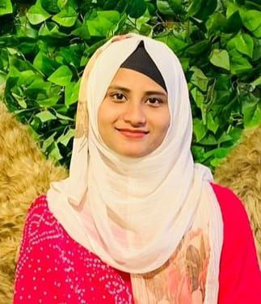

— Deep Learning Researcher
I build deep learning systems that hold up outside the notebook — from segmenting polyps in colonoscopy frames to forecasting air quality across Bangladesh. My process: replicate a strong published baseline, then push past it with an original architectural idea.
3.897
CGPA / 4.00
6
Projects
6
Achievements
